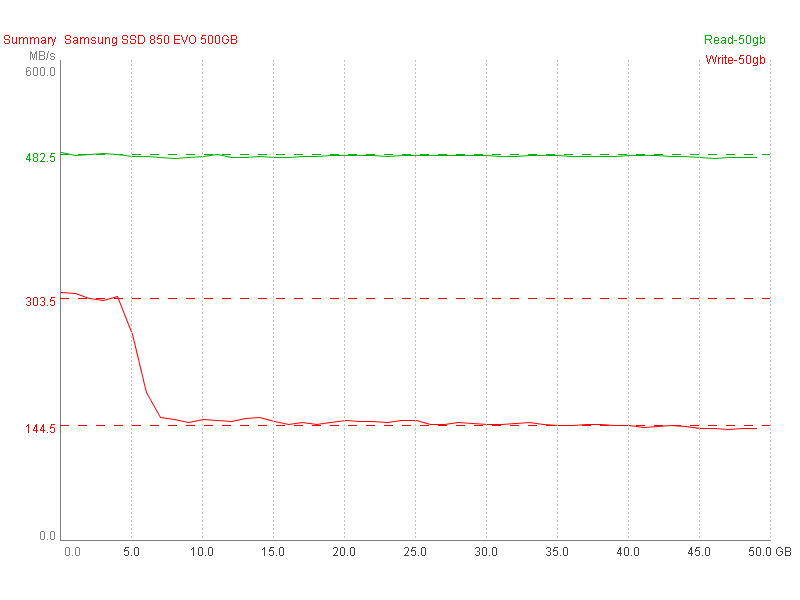
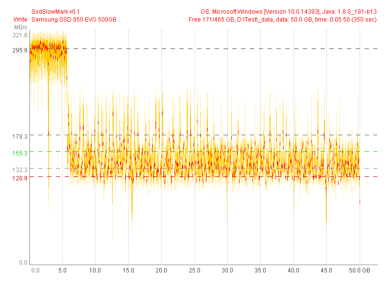
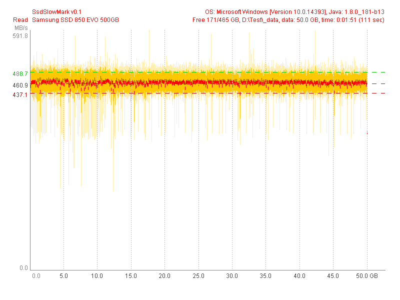

Samsung SSD 850 EVO 500GB (Test 50 GB) |
|
| SsdSlowMark v0.1, OS: Microsoft Windows [Version 10.0.14393], Java: 1.8.0_181-b13 | |
| Read Performance | Write Performance |
avg.max: 460.9 MB/s, 99.9% (49.9 GB)
mid: 338.0 MB/s, 0.1% (0.1 GB)
min: 195.2 MB/s, 0.0% (0.0 GB)
typ.max: 488.7 MB/s, 99.9% (49.9 GB)
typ.min: 437.1 MB/s, 99.9% (49.9 GB)
|
avg.max: 295.9 MB/s, 11.1% (5.6 GB)
mid: 178.3 MB/s, 51.2% (25.6 GB)
min: 132.3 MB/s, 83.2% (41.6 GB)
typ.max: 155.3 MB/s, 88.0% (44.0 GB)
typ.min: 120.9 MB/s, 77.9% (39.0 GB)
|
|  | |
|  | |
|  | |